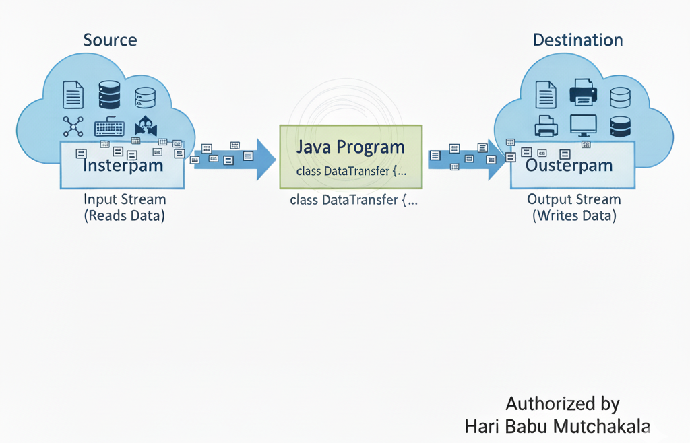
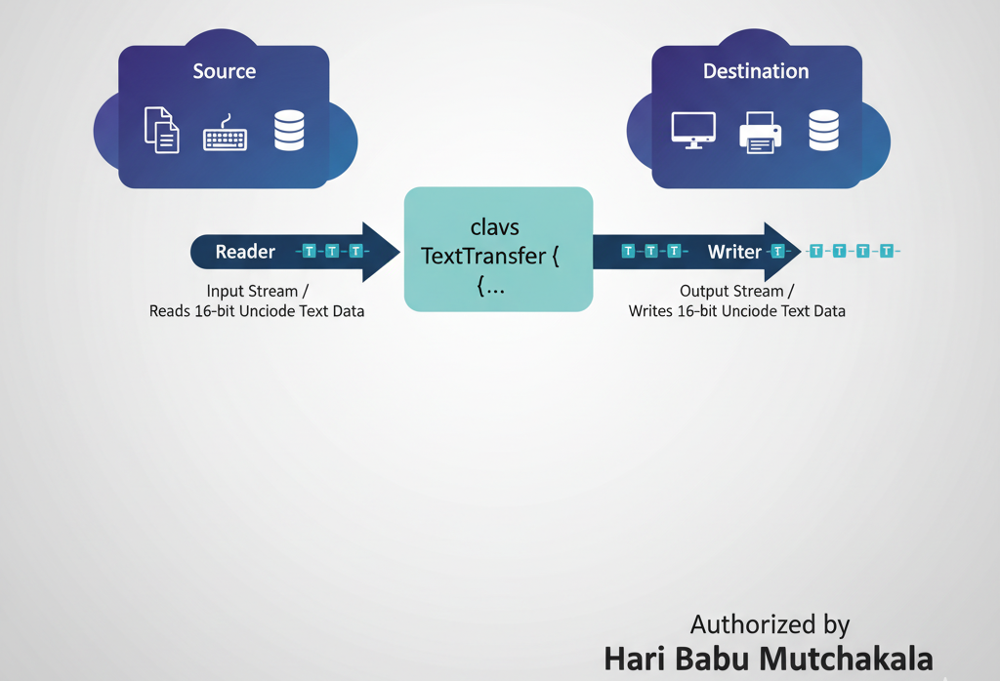

The Java I/O API is a powerful system for handling the input and output of data in applications. It revolves around the concept of streams, representing a flow of data between a source and destination.

System.in – Standard input stream (keyboard).System.out – Standard output stream (console).System.err – Standard error stream (for error messages).
public class StandardIO {
public static void main(String[] args) {
System.out.println("NBKRIST: Standard Output Message");
System.err.println("NBKRIST: Error Message Example");
}
}
System.err for logging critical errors to keep console output clean.
Byte streams handle 8-bit raw data, ideal for binary files such as images or audio. They use
InputStream and OutputStream classes.
import java.io.*;
public class ByteStreamExample {
public static void main(String[] args) {
try (FileInputStream in = new FileInputStream("input.dat");
FileOutputStream out = new FileOutputStream("output.dat")) {
int b;
while ((b = in.read()) != -1) {
out.write(b);
}
System.out.println("NBKRIST: File copied successfully using byte streams.");
} catch (IOException e) {
System.err.println("I/O Error: " + e.getMessage());
}
}
}
Character streams process 16-bit Unicode characters. They are best for text files, automatically managing character encoding.

import java.io.*;
public class CharacterStreamExample {
public static void main(String[] args) {
try (FileReader fr = new FileReader("input.txt");
FileWriter fw = new FileWriter("output.txt")) {
int c;
while ((c = fr.read()) != -1) {
fw.write(c);
}
System.out.println("NBKRIST: Character Stream Success!");
} catch (IOException e) {
System.err.println("I/O Error: " + e.getMessage());
}
}
}
The Scanner class (from java.util) reads input easily from the keyboard or text
files.
import java.util.Scanner;
public class ScannerExample {
public static void main(String[] args) {
Scanner sc = new Scanner(System.in);
System.out.print("Enter your name: ");
String name = sc.nextLine();
System.out.println("Welcome to NBKRIST, " + name + "!");
sc.close();
}
}
Introduced in Java 7, the java.nio.file.Files class provides static methods for file and
directory operations — modern, efficient, and easy to use.
import java.nio.file.*;
import java.io.IOException;
public class FilesExample {
public static void main(String[] args) {
String content = "NBKRIST - JavaHub Modern File I/O Example";
Path filePath = Path.of("nio_output.txt");
try {
Files.writeString(filePath, content);
System.out.println("Content written successfully using Files API!");
} catch (IOException e) {
System.err.println("Error: " + e.getMessage());
}
}
}